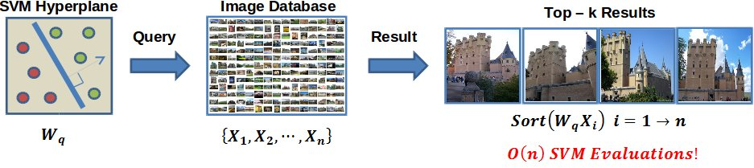

Diversity in Image Retrieval
---------------------------- Update: 10/04/2015 ----------------------------
Summary of the results:
- Baseline with QIP are computationally expensive: [Typically takes 1hr 40min per query]
- Baseline with QIP are memory intensive: [For most queries (17 out of 21) the solver runs for only 3-4 iterations and reports OUT OF MEMORY Err.]
- Baseline with QIP solution is same as NN solution: [The optima at real point has almost equal weights to all the images]
- LSH with QIP solution show reasonable results in terms of the optima at real point: [However, LSH solution is better in all cases, see at ANN rows in the Tables 16.1, 16.2, 16.3]
Table 16.1: Performance of baseline(left), svd(right) methods @ Top 10
| Methods | P | S | AE | $h_{avg}$ | $h_{(P,AE)}$ | time |
| NN | 1.00 | 0.60 | 0.53 | 0.66 | 0.69 | 0.620667 |
| Rerank | 0.99 | 0.76 | 0.72 | 0.82 | 0.83 | 0.804068 |
| Greedy | 0.95 | 0.75 | 0.71 | 0.80 | 0.81 | 5.685634 |
| MMR | 0.92 | 0.73 | 0.68 | 0.77 | 0.78 | 5.167833 |
| QIP | 1.00 | 0.74 | 0.69 | 0.81 | 0.82 | 704.9731 |
|
| Methods | P | S | AE | $h_{avg}$ | $h_{(P,AE)}$ | time |
| ANN | 0.98 | 0.76 | 0.74 | 0.83 | 0.84 | 0.180617 |
| Rerank | 0.95 | 0.79 | 0.76 | 0.84 | 0.85 | 0.154010 |
| Greedy | 0.91 | 0.78 | 0.76 | 0.82 | 0.82 | 0.985829 |
| MMR | 0.92 | 0.78 | 0.74 | 0.81 | 0.82 | 1.102152 |
| QIP | 0.93 | 0.80 | 0.77 | 0.83 | 0.84 | 0.487790 |
|
Table 16.2: Performance of baseline(left), svd(right) methods @ Top 20
| Methods | P | S | AE | $h_{avg}$ | $h_{(P,AE)}$ | time |
| NN | 0.99 | 0.72 | 0.60 | 0.73 | 0.75 | 0.720512 |
| Rerank | 0.99 | 0.84 | 0.75 | 0.85 | 0.86 | 0.792849 |
| Greedy | 0.98 | 0.86 | 0.77 | 0.85 | 0.86 | 11.192675 |
| MMR | 0.95 | 0.86 | 0.75 | 0.83 | 0.84 | 10.584732 |
| QIP | 1.00 | 0.82 | 0.73 | 0.84 | 0.84 | 947.091 |
|
| Methods | P | S | AE | $h_{avg}$ | $h_{(P,AE)}$ | time |
| ANN | 0.95 | 0.89 | 0.85 | 0.89 | 0.90 | 0.182820 |
| Rerank | 0.94 | 0.91 | 0.85 | 0.89 | 0.89 | 0.178973 |
| Greedy | 0.69 | 0.88 | 0.80 | 0.73 | 0.74 | 2.417187 |
| MMR | 0.93 | 0.91 | 0.84 | 0.88 | 0.88 | 2.085060 |
| QIP | 0.92 | 0.94 | 0.86 | 0.88 | 0.89 | 0.499330 |
|
Table 16.3: Performance of baseline(left), svd(right) methods @ Top 30
| Methods | P | S | AE | $h_{avg}$ | $h_{(P,AE)}$ | time |
| NN | 0.99 | 0.79 | 0.64 | 0.77 | 0.78 | 0.845159 |
| Rerank | 0.99 | 0.88 | 0.77 | 0.86 | 0.87 | 0.900628 |
| Greedy | 0.97 | 0.90 | 0.79 | 0.87 | 0.87 | 17.161591 |
| MMR | 0.96 | 0.90 | 0.77 | 0.84 | 0.85 | 16.523978 |
| QIP | 1.00 | 0.87 | 0.76 | 0.86 | 0.86 | 1137.19 |
|
| Methods | P | S | AE | $h_{avg}$ | $h_{(P,AE)}$ | time |
| ANN | 0.89 | 0.98 | 0.91 | 0.90 | 0.90 | 0.105862 |
| Rerank | 0.87 | 0.98 | 0.90 | 0.88 | 0.88 | 0.202913 |
| Greedy | 0.53 | 0.89 | 0.80 | 0.62 | 0.64 | 3.536949 |
| MMR | 0.87 | 0.97 | 0.90 | 0.88 | 0.89 | 4.105651 |
| QIP | 0.86 | 0.98 | 0.90 | 0.88 | 0.88 | 0.501941 |
|
---------------------------- Update: 30/03/2015 ----------------------------
The quadratic optimization problem is convex problem if and only if the function $f(x) = x^{T}Qx$ is convex. Furthermore, the following statements are equivalent.
- $f$ is convex.
- $Q$ is positive semidefinite.
- There exist a matrix $H$ such that $Q = HH^{T}$
In our case, the matrix $Q$ is by construction a positive semidefinite. Note that $H$ is not unique in general, for instance H may be the Cholesky factor or $Q^{1/2}$. Most optimization solvers (like MOSEK), is not informed about $H$ but is only given $Q$, therefore a convexity check is performed by computing a Cholesky factor of $Q$. Unfortunately, this is not a robust convexity check if the rounding errors are present as the rounded $Q$ may not be a positive semidefinite. Therefore, in practice, the wrong conclusions about the convexity cannot be ruled out.
Overcome the convexity check:
- Compute the eigen decomposition of Q and cut off all near zero negative eigen values to zero. Do a backward computation to approximate $Q$ to $\hat{Q}$. Use $\hat{Q}$ in the objective.
- Reformutation to seperable form may lead to much simpler and foolproof convexity check. However, this requires the knowledge of $H \in R^{n \times p}$. Given $H$, we can reformulate the quadratic optimization problem to a quadratic conic optimization problem as follows:
Minimize $ \beta + c^{T}\alpha $
subject to $ \|H\alpha\|_{2} \leq \beta;$ $\alpha^{T}1 = k;$ and $\alpha \in Z^{n}, \beta \in R, Q = HH^{T}$
---------------------------- Update: 11/03/2015 - 24/03/2015 ----------------------------
Exact formulation to diverse retrieval: Given a database of images $X = [x_{1}, \ldots , x_{n}]; \forall i, x_{i} \in R^{d}$ and a hyperplane $w \in R^{d}$, our objective is to retrieve top-k images relevant to the query $w$ that satisfies the following:
Maximize $ \Sigma_{i=1}^{n}\alpha_{i}w^{T}x_{i} + \Sigma_{ij}\alpha_{i}\alpha_{j}\|x_{i} - x_{j}\|_{2}^{2}$
subject to $ \Sigma_{i=1}^{n}\alpha_{i} = k;$ and $\alpha_{i} \in \{0,1\}$
Assuming that $x_{i}, w$ are normalized to unit norm, we can further write this as
Maximize $ \Sigma_{i=1}^{n}\alpha_{i}w^{T}x_{i} - 2\Sigma_{ij}\alpha_{i}\alpha_{j}x_{i}^{T}x_{j}$
subject to $ \Sigma_{i=1}^{n}\alpha_{i} = k;$ and $\alpha_{i} \in \{0,1\}$
Let $\alpha = [\alpha_{1}, \ldots \alpha_{n}]; u = [w^{T}x_{1}, \ldots, w^{T}x_{n}]$, $P$ be gram matrix with $P_{ij} = x_{i}^{T}x_{j}$ and $D$ be the diagonal matrix whose entries are $[P_{11},\ldots ,P_{nn}]$, then the above objective is equivalent to
Maximize $ u^{T}\alpha - \alpha^{T}(P-D)\alpha$
subject to $\alpha^{T}1 = k;$ and $\alpha \in Z^{n}$
With simple substitutions $c = -u$ and $Q = (P-D)$, we have
Minimize $ \alpha^{T}Q\alpha + c^{T}\alpha $
subject to $\alpha^{T}1 = k;$ and $\alpha \in Z^{n}$
In general, $Q = P-D$ is symmetric but not a PSD matrix and so, we end up with a non-convex problem. Since, we are only interested in top-k retrieval, simply use $Q = P$ by dropping the diagonal matrix $D$ in the objective. Therefore, the diverse retrieval problem reduces to a quadratic optimization problem as
Minimize $ \alpha^{T}Q\alpha + c^{T}\alpha $
subject to $\alpha^{T}1 = k;$ and $\alpha \in Z^{n}$
---------------------------- Update: 27/01/2015 ----------------------------
NN @10
| Methods | P | S | AE | $h_{avg}$ | $h_{(P,(AE/Z))}$ |
| Naive | 1.00 | 0.60 | 0.85 | 0.66 | 0.69 |
| Rerank | 0.99 | 0.76 | 1.16 | 0.82 | 0.83 |
| Greedy | 0.95 | 0.75 | 1.15 | 0.80 | 0.81 |
| MMR | 0.92 | 0.73 | 1.10 | 0.77 | 0.78 |
|
LSH-Div @10
| P | S | AE | $h_{avg}$ | $h_{(P,(AE/Z))}$ |
| 0.97 | 0.79 | 1.22 | 0.84 | 0.85 |
| 0.93 | 0.80 | 1.23 | 0.83 | 0.84 |
| 0.89 | 0.80 | 1.23 | 0.81 | 0.82 |
| 0.91 | 0.77 | 1.18 | 0.80 | 0.81 |
|
KDT-Div @10
| P | S | AE | $h_{avg}$ | $h_{(P,(AE/Z))}$ |
| 0.91 | 0.57 | 0.50 | 0.59 | 0.64 |
| 0.85 | 0.73 | 0.72 | 0.76 | 0.77 |
| - | - | - | - | - |
| 0.86 | 0.73 | 0.71 | 0.76 | 0.77 |
|
Time @10
| baseline | LSH | SVD | Kd-Tree |
| 0.620667 | 0.112893 | 0.180617 | 0.110608 |
| 0.804068 | 0.141528 | 0.154010 | 0.210086 |
| 5.685634 | 1.265356 | 0.985829 | |
| 5.167833 | 1.134540 | 1.102152 | |
|
NN @20
| Methods | P | S | AE | $h_{avg}$ | $h_{(P,(AE/Z))}$ |
| Naive | 0.99 | 0.72 | 0.97 | 0.73 | 0.75 |
| Rerank | 0.99 | 0.84 | 1.21 | 0.85 | 0.86 |
| Greedy | 0.98 | 0.86 | 1.24 | 0.85 | 0.86 |
| MMR | 0.95 | 0.86 | 1.21 | 0.83 | 0.84 |
|
LSH-Div @20
| P | S | AE | $h_{avg}$ | $h_{(P,(AE/Z))}$ |
| 0.93 | 0.93 | 1.38 | 0.89 | 0.89 |
| 0.92 | 0.93 | 1.38 | 0.88 | 0.89 |
| 0.68 | 0.88 | 1.30 | 0.72 | 0.73 |
| 0.91 | 0.92 | 1.37 | 0.87 | 0.88 |
|
KDT-Div @20
| P | S | AE | $h_{avg}$ | $h_{(P,(AE/Z))}$ |
| 0.90 | 0.70 | 0.57 | 0.65 | 0.70 |
| 0.86 | 0.85 | 0.78 | 0.79 | 0.81 |
| - | - | - | - | - |
| 0.86 | 0.86 | 0.77 | 0.79 | 0.81 |
|
Time @20
| baseline | LSH | SVD | Kd-Tree |
| 0.720512 | 0.136627 | 0.182820 | 0.181632 |
| 0.792849 | 0.146277 | 0.178973 | 0.196505 |
| 11.192675 | 2.392025 | 2.417187 |
| 10.584732 | 2.377893 | 2.085060 |
|
NN @30
| Methods | P | S | AE | $h_{avg}$ | $h_{(P,(AE/Z))}$ |
| Naive | 0.99 | 0.79 | 1.04 | 0.77 | 0.78 |
| Rerank | 0.99 | 0.88 | 1.24 | 0.86 | 0.87 |
| Greedy | 0.97 | 0.90 | 1.28 | 0.87 | 0.87 |
| MMR | 0.96 | 0.90 | 1.23 | 0.84 | 0.85 |
|
LSH-Div @30
| P | S | AE | $h_{avg}$ | $h_{(P,(AE/Z))}$ |
| 0.89 | 0.98 | 1.47 | 0.90 | 0.90 |
| 0.87 | 0.98 | 1.45 | 0.88 | 0.88 |
| 0.53 | 0.89 | 1.29 | 0.62 | 0.64 |
| 0.87 | 0.97 | 1.44 | 0.88 | 0.89 |
|
KDT-Div @30
| P | S | AE | $h_{avg}$ | $h_{(P,(AE/Z))}$ |
| 0.89 | 0.79 | 0.61 | 0.68 | 0.73 |
| 0.85 | 0.90 | 0.79 | 0.79 | 0.82 |
| - | - | - | - | - |
| 0.86 | 0.91 | 0.78 | 0.79 | 0.82 |
|
Time @30
| baseline | LSH | SVD | Kd-Tree |
| 0.845159 | 0.178645 | 0.105862 | 0.108348 |
| 0.900628 | 0.214144 | 0.202913 | 0.295774 |
| 17.161591 | 4.437053 | 3.536949 |
| 16.523978 | 3.827656 | 4.105651 |
|
---------------------------- Update: 05/11/2014 ----------------------------
Related work in diverse NN search:
- Diverse Near Neighbor Problem, SoCG, 2013 [pdf]
- Composable core-sets for diversity and coverage maximization, PODS, 2014 [pdf]
- $\lambda$-diverse nearest neighbors browsing for multidimensional data, KDE, 2013 [pdf]
- The KNDN Problem: A Quest for Unity in Diversity [pdf]
---------------------------- Update: 23/09/2014 ----------------------------
Table 15: Retrieval time(in sec) for various methods
Top 5
| Methods | baseline | LSH | SVD |
| Naive | 0.570013 | 0.096191 | 0.118293 |
| Rerank | 0.763124 | 0.147858 | 0.145353 |
| Greedy | 2.941714 | 0.594480 | 0.745475 |
| MMR | 2.417155 | 0.648030 | 0.976767 |
|
Top 10
| baseline | LSH | SVD |
| 0.620667 | 0.112893 | 0.180617 |
| 0.804068 | 0.141528 | 0.154010 |
| 5.685634 | 1.265356 | 0.985829 |
| 5.167833 | 1.134540 | 1.102152 |
|
Top 20
| baseline | LSH | SVD |
| 0.720512 | 0.136627 | 0.182820 |
| 0.792849 | 0.146277 | 0.178973 |
| 11.192675 | 2.392025 | 2.417187 |
| 10.584732 | 2.377893 | 2.085060 |
|
Top 30
| baseline | LSH | SVD |
| 0.845159 | 0.178645 | 0.105862 |
| 0.900628 | 0.214144 | 0.202913 |
| 17.161591 | 4.437053 | 3.536949 |
| 16.523978 | 3.827656 | 4.105651 |
|
Table 14.1: Performance of baseline(left), lsh(middle) and svd(right) methods @ Top 5
| Methods | P | S | AE | $h_{avg}$ | $h_{(P,(AE/Z))}$ |
| Naive | 0.99 | 0.47 | 0.70 | 0.57 | 0.61 |
| Rerank | 1.00 | 0.61 | 1.01 | 0.76 | 0.77 |
| Greedy | 0.90 | 0.58 | 0.96 | 0.69 | 0.72 |
| MMR | 0.83 | 0.54 | 0.86 | 0.62 | 0.65 |
|
| Methods | P | S | AE | $h_{avg}$ | $h_{(P,(AE/Z))}$ |
| Naive | 0.98 | 0.58 | 0.93 | 0.70 | 0.73 |
| Rerank | 0.91 | 0.60 | 0.99 | 0.72 | 0.74 |
| Greedy | 0.83 | 0.57 | 0.93 | 0.66 | 0.68 |
| MMR | 0.86 | 0.55 | 0.87 | 0.64 | 0.66 |
|
| Methods | P | S | AE | $h_{avg}$ | $h_{(P,(AE/Z))}$ |
| Naive | 0.98 | 0.55 | 0.89 | 0.68 | 0.71 |
| Rerank | 0.93 | 0.60 | 0.98 | 0.72 | 0.74 |
| Greedy | 0.83 | 0.56 | 0.93 | 0.67 | 0.68 |
| MMR | 0.85 | 0.54 | 0.86 | 0.63 | 0.66 |
|
Table 14.2: Performance of baseline(left), lsh(middle) and svd(right) methods @ Top 10
| Methods | P | S | AE | $h_{avg}$ | $h_{(P,(AE/Z))}$ |
| Naive | 1.00 | 0.60 | 0.85 | 0.66 | 0.69 |
| Rerank | 0.99 | 0.76 | 1.16 | 0.82 | 0.83 |
| Greedy | 0.95 | 0.75 | 1.15 | 0.80 | 0.81 |
| MMR | 0.92 | 0.73 | 1.10 | 0.77 | 0.78 |
|
| Methods | P | S | AE | $h_{avg}$ | $h_{(P,(AE/Z))}$ |
| Naive | 0.97 | 0.79 | 1.22 | 0.84 | 0.85 |
| Rerank | 0.93 | 0.80 | 1.23 | 0.83 | 0.84 |
| Greedy | 0.89 | 0.80 | 1.23 | 0.81 | 0.82 |
| MMR | 0.91 | 0.77 | 1.18 | 0.80 | 0.81 |
|
| Methods | P | S | AE | $h_{avg}$ | $h_{(P,(AE/Z))}$ |
| Naive | 0.98 | 0.76 | 1.18 | 0.83 | 0.84 |
| Rerank | 0.95 | 0.79 | 1.23 | 0.84 | 0.85 |
| Greedy | 0.91 | 0.78 | 1.22 | 0.82 | 0.82 |
| MMR | 0.92 | 0.78 | 1.20 | 0.81 | 0.82 |
|
Table 14.3: Performance of baseline(left), lsh(middle) and svd(right) methods @ Top 20
| Methods | P | S | AE | $h_{avg}$ | $h_{(P,(AE/Z))}$ |
| Naive | 0.99 | 0.72 | 0.97 | 0.73 | 0.75 |
| Rerank | 0.99 | 0.84 | 1.21 | 0.85 | 0.86 |
| Greedy | 0.98 | 0.86 | 1.24 | 0.85 | 0.86 |
| MMR | 0.95 | 0.86 | 1.21 | 0.83 | 0.84 |
|
| Methods | P | S | AE | $h_{avg}$ | $h_{(P,(AE/Z))}$ |
| Naive | 0.93 | 0.93 | 1.38 | 0.89 | 0.89 |
| Rerank | 0.92 | 0.93 | 1.38 | 0.88 | 0.89 |
| Greedy | 0.68 | 0.88 | 1.30 | 0.72 | 0.73 |
| MMR | 0.91 | 0.92 | 1.37 | 0.87 | 0.88 |
|
| Methods | P | S | AE | $h_{avg}$ | $h_{(P,(AE/Z))}$ |
| Naive | 0.95 | 0.89 | 1.36 | 0.89 | 0.90 |
| Rerank | 0.94 | 0.91 | 1.37 | 0.89 | 0.89 |
| Greedy | 0.69 | 0.88 | 1.29 | 0.73 | 0.74 |
| MMR | 0.93 | 0.91 | 1.35 | 0.88 | 0.88 |
|
Table 14.4: Performance of baseline(left), lsh(middle) and svd(right) methods @ Top 30
| Methods | P | S | AE | $h_{avg}$ | $h_{(P,(AE/Z))}$ |
| Naive | 0.99 | 0.79 | 1.04 | 0.77 | 0.78 |
| Rerank | 0.99 | 0.88 | 1.24 | 0.86 | 0.87 |
| Greedy | 0.97 | 0.90 | 1.28 | 0.87 | 0.87 |
| MMR | 0.96 | 0.90 | 1.23 | 0.84 | 0.85 |
|
| Methods | P | S | AE | $h_{avg}$ | $h_{(P,(AE/Z))}$ |
| Naive | 0.89 | 0.98 | 1.47 | 0.90 | 0.90 |
| Rerank | 0.87 | 0.98 | 1.45 | 0.88 | 0.88 |
| Greedy | 0.53 | 0.89 | 1.29 | 0.62 | 0.64 |
| MMR | 0.87 | 0.97 | 1.44 | 0.88 | 0.89 |
|
| Methods | P | S | AE | $h_{avg}$ | $h_{(P,(AE/Z))}$ |
| Naive | 0.92 | 0.95 | 1.43 | 0.90 | 0.90 |
| Rerank | 0.90 | 0.95 | 1.42 | 0.89 | 0.89 |
| Greedy | 0.52 | 0.88 | 1.29 | 0.61 | 0.63 |
| MMR | 0.89 | 0.96 | 1.41 | 0.88 | 0.88 |
|
---------------------------- Update: 27/05/2014 ----------------------------
Data dependent LSH methods.
- Density Sensitive Hashing, arXiv, 2012 [link]
- Approximate Analytics: Keeping Pace with Big Data using Parallel Locality Sensitive Hashing, ISTC Big Data, 2013 [link]
- Distribution-Aware Locality Sensitive Hashing, Advances in Multimedia Modeling, 2013 [link]
SVM classifiers for image retrieval.
- Image Retrieval Using Eigen Queries, ACCV, 2012 [link]
---------------------------- Update: 28/02/2014 - 07/03/2014 ----------------------------
Designing LSH functions:
- Cluster based Method: From the training data, $X = \{x_{1}, \ldots, x_{n}\}$, get the Cluster centriods $C = \{c_{1}, \ldots, c_{k}\}$, ($c_{i} \in R^{d}$, $k$ is the number of random permutations required for LSH).
- Singular values Method: Take $k$ largest singular values from the training samples, $X$.
Mean P, S, AE, $h_{(P,(AE/Z))}$ for 50 queries using singular values approach
Table 13.1: top 35 singular values
| Methods | P | S | AE | $h_{avg}$ | $h_{(P,(AE/Z))}$ |
| Naive | 0.97 | 0.76 | 1.19 | 0.83 | 0.84 |
| Rerank | 0.96 | 0.79 | 1.22 | 0.84 | 0.85 |
| Greedy | 0.92 | 0.80 | 1.23 | 0.83 | 0.83 |
| MMR | 0.94 | 0.77 | 1.19 | 0.82 | 0.83 |
|
Table 13.2: top 70 singular values
| Methods | P | S | AE | $h_{avg}$ | $h_{(P,(AE/Z))}$ |
| Naive | 1.00 | 0.73 | 1.07 | 0.78 | 0.80 |
| Rerank | 0.99 | 0.77 | 1.15 | 0.82 | 0.83 |
| Greedy | 0.95 | 0.78 | 1.17 | 0.82 | 0.83 |
| MMR | 0.97 | 0.74 | 1.11 | 0.79 | 0.81 |
|
Table 13.3: top 140 singular values
| Methods | P | S | AE | $h_{avg}$ | $h_{(P,(AE/Z))}$ |
| Naive | 0.99 | 0.77 | 1.15 | 0.81 | 0.83 |
| Rerank | 0.97 | 0.80 | 1.22 | 0.84 | 0.85 |
| Greedy | 0.95 | 0.80 | 1.21 | 0.83 | 0.84 |
| MMR | 0.97 | 0.77 | 1.16 | 0.82 | 0.83 |
|
Table 13.4: top 187 singular values
| Methods | P | S | AE | $h_{avg}$ | $h_{(P,(AE/Z))}$ |
| Naive | 0.99 | 0.74 | 1.11 | 0.80 | 0.81 |
| Rerank | 0.97 | 0.79 | 1.20 | 0.83 | 0.85 |
| Greedy | 0.95 | 0.83 | 1.27 | 0.85 | 0.86 |
| MMR | 0.97 | 0.79 | 1.20 | 0.83 | 0.84 |
|
Mean P, S, AE, $h_{(P,(AE/Z))}$ for 50 queries using clustering approach
Table 14.1: #clusters = 35
| Methods | P | S | AE | $h_{avg}$ | $h_{(P,(AE/Z))}$ |
| Naive | 0.79 | 0.57 | 0.93 | 0.64 | 0.67 |
| Rerank | 0.74 | 0.59 | 0.95 | 0.64 | 0.66 |
| Greedy | 0.70 | 0.61 | 1.00 | 0.64 | 0.66 |
| MMR | 0.74 | 0.58 | 0.92 | 0.62 | 0.64 |
|
Table 14.2: #clusters = 70
| Methods | P | S | AE | $h_{avg}$ | $h_{(P,(AE/Z))}$ |
|
Table 14.3: #clusters = 140
| Methods | P | S | AE | $h_{avg}$ | $h_{(P,(AE/Z))}$ |
|
Table 14.4: #clusters = 187
| Methods | P | S | AE | $h_{avg}$ | $h_{(P,(AE/Z))}$ |
|
---------------------------- Update: 07/02/2014 - 13/02/2014 ----------------------------
LSH for Diverse image retrieval:
- Given a database of points $X = \{x_{1}, \ldots, x_{n}\}$ with each $x_{i} \in R^{d}$, obtain $k$ random points from X as $C \subset X$, (k << n, $C$ a $k \times d$ matrix).
- To construct the LSH partitions, choose a random vector $r \in R^{k}$ and compute $r_{i} = r^{T}C$.
- Use hash functions $h_{r_{1}} \ldots h_{r_{k}}$ for LSH as
$h_{\vec{r_{i}}}(\vec{x})=
\begin{cases}
1 & \text{if } \vec{r_{i}}.\vec{x} \geq 0 \\
0 & \text{if } \vec{r_{i}}.\vec{x} < 0
\end{cases}$
Table 12: diversity preserving lsh
| $k$ | P | S | AE | $h_{avg}$ | $h_{(P,(AE/Z))}$ |
| 35 | 0.86 | 0.71 | 1.09 | 0.74 | 0.76 |
| 50 | 0.88 | 0.75 | 1.17 | 0.79 | 0.80 |
| 100 | 0.83 | 0.66 | 1.00 | 0.68 | 0.71 |
---------------------------- Update: 24/01/2014 - 31/01/2014 ----------------------------
Table 10: Performance of greedy solution to DPP method for various kernels
| Kernel | Results | Empirical Analysis |
| $K_{ij}^{1} = \frac{x_{i}^{T}x_{j}}{(|x_{i}-w||x_{j}-w|)^{d}}$ | kernel1 | Baseline performs better than lsh method |
| $K_{ij}^{2} = \frac{x_{i}^{T}x_{j}}{(|w^{T}x_{i}||w^{T}x_{j}|)^{d}}$ | kernel2 | Baseline and LSH methods perform equally for approxpriate $d$ |
| $K_{ij}^{3} = \frac{x_{i}^{T}x_{j}}{e^{-\gamma(|w^{T}x_{i}|+|w^{T}x_{j}|)}}$ | kernel3 | LSH performs better than Baseline
Precision is consistent for lsh methods and reasonably good. |
| $K_{ij}^{4} = \frac{x_{i}^{T}x_{j}}{e^{-\gamma(|w^{T}x_{i}||w^{T}x_{j}|)}}$ | kernel4 | LSH performs better than baseline using only top-50 and top-100.
Huge drop in precision for $top \ge 150$ |
Table 11:Comparison with earlier results with greedy solution to DDP using $K_{ij}^{3}$
Table 11.1: Baseline
| Methods | P | S | AE | $h_{avg}$ | $h_{(P,(AE/Z))}$ |
| Naive | 1.00 | 0.50 | 0.65 | 0.55 | 0.58 |
| Rerank | 1.00 | 0.73 | 1.11 | 0.81 | 0.82 |
| Greedy | 0.99 | 0.74 | 1.10 | 0.79 | 0.81 |
| MMR | 0.97 | 0.72 | 1.06 | 0.77 | 0.78 |
| DPP with $K_{ij}^{3}$ | 1.00 | 0.64 | 0.96 | 0.74 | 0.75 |
|
Table 11.2: LSH
| Methods | P | S | AE | $h_{avg}$ | $h_{(P,(AE/Z))}$ |
| Naive | 0.98 | 0.81 | 1.23 | 0.85 | 0.86 |
| Rerank | 0.96 | 0.82 | 1.26 | 0.86 | 0.86 |
| Greedy | 0.92 | 0.81 | 1.24 | 0.83 | 0.84 |
| MMR | 0.96 | 0.79 | 1.20 | 0.83 | 0.84 |
| DPP with $K_{ij}^{3}$ | 0.97 | 0.83 | 1.27 | 0.86 | 0.87 |
|
---------------------------- Update: 17/01/2014 - 23/01/2014 ----------------------------
- Corrections to Entropy measure are made
- Rerank and DPP performance using top 50 are shown below
- DPP results with modified kernel did not yield any significant improvements
- Results in Table 9.1 and 9.2 are averaged over 4(out of 7) classes from our datsets
- Multi label learning: here
Mean P, S, AE, $h_{(P,(AE/Z))}$ for 50 queries
Performance on Training dataset
Table 9.1: Baseline methods
| Methods | P | S | AE | $h_{avg}$ | $h_{(P,(AE/Z))}$ |
| Naive | 1.00 | 0.65 | 0.61 | 0.74 | 0.76 |
| Rerank | 1.00 | 0.89 | 0.86 | 0.92 | 0.92 |
| Greedy | 1.00 | 0.92 | 0.87 | 0.93 | 0.93 |
| MMR | 1.00 | 0.92 | 0.87 | 0.92 | 0.93 |
|
Table 9.2: LSH methods
| Methods | P | S | AE | $h_{avg}$ | $h_{(P,(AE/Z))}$ |
| Naive | 0.98 | 0.87 | 0.83 | 0.90 | 0.90 |
| Rerank | 0.99 | 0.91 | 0.87 | 0.92 | 0.93 |
| Greedy | 0.96 | 0.88 | 0.83 | 0.89 | 0.89 |
| MMR | 0.99 | 0.94 | 0.90 | 0.94 | 0.94 |
|
|
(For visual comparison of baseline and lsh methods, see here)
Performance on Testing dataset
Table 9.3: Baseline results are here
| Methods | P | S | AE | $h_{avg}$ | $h_{(P,(AE/Z))}$ |
| Naive | 1.00 | 0.50 | 0.65 | 0.55 | 0.58 |
| Rerank | 1.00 | 0.73 | 1.11 | 0.81 | 0.82 |
| Greedy | 0.99 | 0.74 | 1.10 | 0.79 | 0.81 |
| MMR | 0.97 | 0.72 | 1.06 | 0.77 | 0.78 |
| DPP | 1.00 | 0.60 | 0.86 | 0.68 | 0.70 |
|
Table 9.4: LSH results are here
| Methods | P | S | AE | $h_{avg}$ | $h_{(P,(AE/Z))}$ |
| Naive | 0.98 | 0.81 | 1.23 | 0.85 | 0.86 |
| Rerank | 0.96 | 0.82 | 1.26 | 0.86 | 0.86 |
| Greedy | 0.92 | 0.81 | 1.24 | 0.83 | 0.84 |
| MMR | 0.96 | 0.79 | 1.20 | 0.83 | 0.84 |
| DPP | 0.85 | 0.82 | 1.29 | 0.82 | 0.83 |
|
|
---------------------------- Update: 11/01/2014 - 16/01/2014 ----------------------------
Experiments include DPP based retrieval methods.
P, S, AE and $h$ for 50 randomized runs
Table 7.1: Baseline methods
| Methods | P | S | AE | $h_{avg}$ | $h_{(P,(AE/Z))}$ |
| Naive | 1.00 | 0.50 | 0.65 | 0.55 | 0.58 |
| Greedy | 0.99 | 0.78 | 1.15 | 0.82 | 0.83 |
| MMR | 0.91 | 0.69 | 0.85 | 0.63 | 0.67 |
|
Table 7.2: LSH methods
| Methods | P | S | AE | $h_{avg}$ | $h_{(P,(AE/Z))}$ |
| Naive | 0.98 | 0.81 | 1.09 | 0.78 | 0.80 |
| Greedy | 0.85 | 0.78 | 0.91 | 0.62 | 0.68 |
| MMR | 0.94 | 0.79 | 1.06 | 0.75 | 0.78 |
|
Table:8.1 Using Top 50
Baseline methods
| Methods | P | S | AE | $h_{avg}$ | $h_{(P,(AE/Z))}$ |
| Rerank | 1.00 | 0.68 | 0.98 | 0.74 | 0.76 |
| DPP | 1.00 | 0.57 | 0.79 | 0.64 | 0.66 |
|
LSH methods
| P | S | AE | $h_{avg}$ | $h_{(P,(AE/Z))}$ |
| 0.96 | 0.82 | 1.00 | 0.72 | 0.75 |
| 0.85 | 0.81 | 0.75 | 0.56 | 0.60 |
|
|
Table:8.2 Using Top 100
Baseline methods
| P | S | AE | $h_{avg}$ | $h_{(P,(AE/Z))}$ |
| 1.00 | 0.72 | 1.07 | 0.78 | 0.80 |
| 1.00 | 0.61 | 0.84 | 0.66 | 0.68 |
|
LSH methods
| P | S | AE | $h_{avg}$ | $h_{(P,(AE/Z))}$ |
| 0.95 | 0.81 | 0.98 | 0.71 | 0.74 |
| 0.67 | 0.76 | 0.88 | 0.56 | 0.60 |
|
|
Table:8.3 Using Top 150
Baseline methods
| Methods | P | S | AE | $h_{avg}$ | $h_{(P,(AE/Z))}$ |
| Rerank | 1.00 | 0.74 | 1.11 | 0.80 | 0.82 |
| DPP | 1.00 | 0.61 | 0.84 | 0.67 | 0.69 |
|
LSH methods
| P | S | AE | $h_{avg}$ | $h_{(P,(AE/Z))}$ |
| 0.94 | 0.81 | 0.96 | 0.69 | 0.73 |
| 0.58 | 0.70 | 1.03 | 0.56 | 0.61 |
|
|
Table:8.4 Using Top 200
Baseline methods
| P | S | AE | $h_{avg}$ | $h_{(P,(AE/Z))}$ |
| 1.00 | 0.74 | 1.12 | 0.81 | 0.82 |
| 1.00 | 0.71 | 1.02 | 0.75 | 0.77 |
|
LSH methods
| P | S | AE | $h_{avg}$ | $h_{(P,(AE/Z))}$ |
| 0.94 | 0.81 | 0.95 | 0.69 | 0.73 |
| 0.17 | 0.30 | 1.32 | 0.27 | 0.29 |
|
|
Table:8.5 Using Top 250
Baseline methods
| Methods | P | S | AE | $h_{avg}$ | $h_{(P,(AE/Z))}$ |
| Rerank | 1.00 | 0.74 | 1.12 | 0.81 | 0.82 |
| DPP | 1.00 | 0.65 | 0.92 | 0.71 | 0.73 |
|
LSH methods
| P | S | AE | $h_{avg}$ | $h_{(P,(AE/Z))}$ |
| 0.94 | 0.81 | 0.95 | 0.69 | 0.73 |
| 0.19 | 0.30 | 1.30 | 0.28 | 0.30 |
|
|
Table:8.6 Using Top 300
Baseline methods
| P | S | AE | $h_{avg}$ | $h_{(P,(AE/Z))}$ |
| 1.00 | 0.74 | 1.11 | 0.80 | 0.82 |
| 1.00 | 0.66 | 0.94 | 0.72 | 0.73 |
|
LSH methods
| P | S | AE | $h_{avg}$ | $h_{(P,(AE/Z))}$ |
| 0.94 | 0.81 | 0.94 | 0.69 | 0.72 |
| 0.47 | 0.62 | 1.16 | 0.54 | 0.57 |
|
|
---------------------------- Update: 27/12/2013 - 10/01/2014 ----------------------------
We report the results on multiple runs for various (random)queries in terms of precision(P), sub-topic recall(S), average entropy(AE) and $h_{(P,AE)}$. In these experiments, we split the data as follows
- Training Data: 200 images per sub-topic totalling to 7K images.
- We randomly select 50 images per sub-topic to build the queries and the rest 150 images for validation set(used to fix the hyperparameters).
- Testing Data: 1000 images per sub-topic toalling to 35K images.
P, S, AE and $h$ of 4 Classes on 50 randomized runs
Table 5.1: Baseline methods
| Methods | P | S | AE | $h_{avg}$ |
| Naive | 1.00 | 0.50 | 0.40
0.65 | 0.55 |
| Rerank | 1.00 | 0.74 | 1.12 | 0.81 |
| Greedy | 0.99 | 0.78 | 1.15 | 0.82 |
| MMR | 0.91 | 0.69 | 0.85 | 0.63 |
|
Table 5.2: LSH methods
| Methods | P | S | AE | $h_{avg}$ |
| Naive | 0.98 | 0.81 | 0.68
1.09 | 0.78 |
| Rerank | 0.94 | 0.81 | 0.95 | 0.69 |
| Greedy | 0.85 | 0.78 | 0.91 | 0.62 |
| MMR | 0.94 | 0.79 | 1.06 | 0.75 |
|
P, S, AE and $h$ of 4 Classes on 50 randomized runs
Table 6.1: Baseline methods
| Methods | P | S | AE | $h_{avg}$ | $h_{(P,(AE/Z))}$ |
| Naive | 1.00 | 0.50 | 0.65 | 0.55 | 0.58 |
| Rerank | 1.00 | 0.74 | 1.12 | 0.81 | 0.82 |
| Greedy | 0.99 | 0.78 | 1.15 | 0.82 | 0.83 |
| MMR | 0.91 | 0.69 | 0.85 | 0.63 | 0.67 |
|
Table 6.2: LSH methods
| Methods | P | S | AE | $h_{avg}$ | $h_{(P,(AE/Z))}$ |
| Naive | 0.98 | 0.81 | 1.09 | 0.78 | 0.80 |
| Rerank | 0.94 | 0.81 | 0.95 | 0.69 | 0.73 |
| Greedy | 0.85 | 0.78 | 0.91 | 0.62 | 0.68 |
| MMR | 0.94 | 0.79 | 1.06 | 0.75 | 0.78 |
|
- Naive and MMR perform low for baselines and high for LSH methods. However, Rerank and Greedy show opposite trend(see $h_{(P,AE)}$ values in Table 5).
- For results shown in the last update, we have used 200 images per sub-topic to generate the queries
- Due to space constraints, currently we have only used 50 randomly selected images per sub-topic.
- However, we should be able to randomly select images through out the dataset, which may give uniform trend for all methods.
Similarity Preserving Hash functions: Existence of similarity preserving hash functions are studied in [1] and proved some necessary conditions on similairy measures $sim(x,y) \in [0,1]$ for existence of locality sensitive hash functions satisfying
$Pr_{h \in F}[h(x) = h(y)] = sim(x,y)$
- Lemma 1: For any similarity function $sim(x,y)$ that admits a locality sensitive hash function families, the distance function $1-sim(x,y)$ satisfies triangle inequality.
- Lemma 2: Given a locality sensitive hash function family $F$ corresponding to to a similarity function $sim(x,y)$, we can obtain a locality sensitive hash function family $F^{'}$ that maps objects to $\{0,1\}$ and corresponds to the similality function $\frac{1+sim(x,y)}{2}$.
- Lemma 3: For any similarity function $sim(x,y)$ that admits a locality sensitive hash function families, the distance function $1-sim(x,y)$ is isometrically embeddable in Hamming cube.
- It is also shown that procedures used for rounding fractional solutions from linear programs and vector solutions to semi-definite programs can be used to derive similarity preserving hash functions for interesting class of similarity functions.
LSH with Diversity : Is it possible to design hash functions that improve diversity along with similarity to the given query?
- For Greedy we have, $sim(w_{q}, x; x_{r_{1}}, \ldots x_{r_{i-1}}) = (\gamma w_{q}^{T} - \frac{(1-\gamma)}{(i-1)}\Sigma_{j=1}^{i-1} x_{r_{j}}^{T})x$
- For MMR we have, $sim(w_{q}, x; x_{r_{1}}, \ldots x_{r_{i-1}}) = \operatorname{arg\,max}_{j \leq (i-1)}(\gamma w_{q}^{T}- (1-\gamma) x_{r_{j}}^{T})x$
References
- Moses S Charikar, Similarity estimation techniques from rounding algorithms, STOC, 2002[pdf]
---------------------------- Update: 26/12/2013 ----------------------------
We tried baselines and lsh based methods on a new dataset with the following categories
- Animal - camel, cat, cow, dog, sheep
- Bottle - ampule, beer-bottle, soda-bottle, water-bottle, wine-bottle
- Flower - carota, lily, rose, sunflower, wildpea
- Furniture - bed, bench, chair, table, wallunit
- Geography - cave, iceberg, mountain, oceanfloor, volcano
- Music - keyboard, percussion, pipe, violin, whistle
- Vehicle - aeroplane, bicycle, car, roadroller, train
In our experiments, hyperparameters are tuned using the training data (classifiers are constructed from the same training data) and the best ones are used on the testing data. We use the harmonic mean of precision and entropy, ($h_{(P,AE)}$ ), to enable the results to be compared on one single measure.
Training Data: 200 images per sub-topic totalling to 7K images.
Testing Data: 1000 images per sub-topic toalling to 35K images.
Observations drawn from our results:
- Bottle, Flower, Furniture and Vehicle (4 out of 7) classes show low diversity for naive retrieval and high diversity for Rerank, Greedy and MMR methods.
- Naive LSH method performs better than naive retrieval. And MMR with lsh performs better than baseline MMR method.
- Harmonic mean of the precision and sub-topic entropy calculated on these 4 classes are shown below.
Qualitative results for baselines here and lsh here
| Methods | Naive | Rerank | Greedy | MMR | Naive+LSH | Rerank+LSH | Greedy+LSH | MMR + LSH |
| $h_{(P,E)}$ | 0.31 | 0.85 | 0.88 | 0.75 | 0.87 | 0.91 | 0.74 | 0.90 |
- In general, approximate/hash-based similarity search performance(say precision) is lower than the exact/naive similarity search. However, in our case we have both similarity(precision) and dissimilariy(entropy) measures for sub-topic retrieval. In such scenarios, hash-based methods tend to give more diversified results on an average compared to exact similarity based methods.
---------------------------- Update: 11/11/2013 ----------------------------
Formulation 3: Given a database of images $X = [x_{1}, \ldots , x_{n}]; \forall i, x_{i} \in R^{d}$ and a hyperplane $w \in R^{d}$, our objective of retrieving top-k diverse images with respect to $w$ is to
Maximize $ - \Sigma_{ij}\alpha_{i}\alpha_{j}x_{i}^{T}x_{j}$
subject to $ \forall$ $i$, $ \alpha_{i}w^{T}x_{i} \ge 0 $ ; $ \Sigma_{i=1}^{n}\alpha_{i} = k;$ and $\alpha_{i} \in \{0,1\}$
Let $\alpha = [\alpha_{1}, \ldots \alpha_{n}]; u = [w^{T}x_{1}, \ldots, w^{T}x_{n}]$, $A = diag(u)$, $P$ be gram matrix with $P_{ij} = x_{i}^{T}x_{j}$ and $D$ be the diagonal matrix whose entries are $[P_{11},\ldots ,P_{nn}]$, then the above objective is equivalent to
Maximize $ - \frac{1}{2}\alpha^{T}(P-D)\alpha$
subject to $ A\alpha \ge 0$; $ 1^{T}\alpha = k;$ and $\alpha \in Z^{n}$
With $Q = \frac{P-D}{2}$, we have
Minimize $ \alpha^{T}Q\alpha $
subject to $A\alpha \ge 0 $ ; $1^{T}\alpha = k;$ and $\alpha \in Z^{n}$
The above equation takes the form of a standard Quadratic programming problem with linear constraints.
---------------------------- Update: 28/9/2013 - 6/10/2013 ----------------------------
Dataset: A subset of imagenet
[link] database is chosen. The collected dataset includes 10 classes and each class has 5 subtopics. Each subtopic has 1200 images in the dataset. The classifer are trained on 200 images from each subtopic and obtained 72.78% classification accuracy on the testdata(1000 images per subtopic).
Table 4.1: P, S and AE @10 on complete data
Methods
| Topics |
| aeroplane |
| bench |
| bicycle |
| bird |
| boat |
| bottle |
| car |
| cat |
| chair |
| cow |
| MEAN |
|
Rerank($\alpha$=0.6)
| P | S | AE |
| 1.00 | 0.80 | 1.17 |
| 1.00 | 0.40 | 0.69 |
| 1.00 | 0.40 | 0.50 |
| 0.90 | 0.80 | 0.33 |
| 1.00 | 0.80 | 1.33 |
| 1.00 | 0.60 | 1.03 |
| 1.00 | 0.60 | 0.90 |
| 0.90 | 1.00 | 0.33 |
| 0.90 | 1.00 | 0.33 |
| 1.00 | 0.60 | 0.90 |
| 0.97 | 0.70 | 0.76 |
|
Greedy($\alpha$=0.7)
| P | S | AE |
| 1.00 | 0.60 | 0.90 |
| 1.00 | 0.60 | 0.94 |
| 1.00 | 0.40 | 0.61 |
| 1.00 | 1.00 | 1.36 |
| 1.00 | 1.00 | 1.47 |
| 1.00 | 0.60 | 0.80 |
| 1.00 | 0.60 | 0.90 |
| 1.00 | 0.80 | 1.22 |
| 0.90 | 0.80 | 0.33 |
| 1.00 | 0.60 | 0.90 |
| 0.99 | 0.70 | 0.94 |
|
MMR($\alpha$=0.7)
| P | S | AE |
| 1.00 | 0.60 | 0.80 |
| 1.00 | 0.40 | 0.67 |
| 1.00 | 0.40 | 0.50 |
| 1.00 | 0.80 | 1.09 |
| 1.00 | 1.00 | 1.42 |
| 1.00 | 0.80 | 1.28 |
| 1.00 | 0.80 | 1.17 |
| 1.00 | 1.00 | 1.36 |
| 1.00 | 1.00 | 1.47 |
| 1.00 | 0.60 | 0.80 |
| 1.00 | 0.74 | 1.06 |
|
No diversity
| P | S | AE |
| 1.00 | 0.40 | 0.50 |
| 1.00 | 0.60 | 0.94 |
| 1.00 | 0.60 | 1.05 |
| 1.00 | 0.80 | 1.22 |
| 1.00 | 0.80 | 1.30 |
| 1.00 | 0.40 | 0.32 |
| 1.00 | 0.80 | 1.22 |
| 1.00 | 1.00 | 1.42 |
| 1.00 | 0.80 | 1.17 |
| 1.00 | 0.60 | 0.94 |
| 1.00 | 0.68 | 1.01 |
|
|
Table 5:Performance with LSH on ImageNet database
| Methods | P | SR | AE | $h_{P,AE}$ |
| No diversity | 0.99 | 0.80 | 0.70 | 0.79 |
| Rerank | 0.96 | 0.90 | 0.80 | 0.87 |
| Greedy | 0.94 | 0.82 | 0.71 | 0.80 |
| MMR | 0.97 | 0.90 | 0.84 | 0.90 |
Issues
- How to characterize diversity for real datasets when each class has varying degree of diversity i.e, number of subtopics in each class.
- Even when classes have same number of subtopics, each class might require different degree of diversity (evident from our initial experiments). Instead of averaging, we may have to analayse each class separately
---------------------------- Update: 27/9/2013 ----------------------------
Revisiting the problem of image diversity: Given a database of images $X = [x_{1}, \ldots , x_{n}]; \forall i, x_{i} \in R^{d}$ and a hyperplane $w \in R^{d}$, our objective of retrieving top-k diversified images with respect to $w$ is to
Maximize $ \Sigma_{i=1}^{n}\alpha_{i}w^{T}x_{i} - \Sigma_{ij}\alpha_{i}\alpha_{j}x_{i}^{T}x_{j}$
subject to $ \Sigma_{i=1}^{n}\alpha_{i} = k;$ and $\alpha_{i} \in \{0,1\}$
Let $\alpha = [\alpha_{1}, \ldots \alpha_{n}]; u = [w^{T}x_{1}, \ldots, w^{T}x_{n}]$, $P$ be gram matrix with $P_{ij} = x_{i}^{T}x_{j}$ and $D$ be the diagonal matrix whose entries are $[P_{11},\ldots ,P_{nn}]$, then the above objective is equivalent to
Maximize $ u^{T}\alpha - \frac{1}{2}\alpha^{T}(P-D)\alpha$
subject to $\alpha^{T}1 = k;$ and $\alpha \in Z^{n}$
With simple substitutions $c = -u$ and $Q = \frac{P-D}{2}$, we have
Minimize $ \alpha^{T}Q\alpha + c^{T}\alpha $
subject to $\alpha^{T}1 = k;$ and $\alpha \in Z^{n}$
Quadratic programming problems of this form are solved using branch-and-bound techniques
[1][2].
References
- Buchheim, Christoph and Caprara, Alberto and Lodi, Andrea An Effective Branch-and-Bound Algorithm for Convex Quadratic Integer Programming, Mathematical Programming, Springer, 2010 [pdf]
- Buchheim, Christoph and De Santis, Marianna and Palagi, Laura and Piacentini, Mauro An Exact Algorithm for Nonconvex Quadratic Integer Minimization using Ellipsoidal Relaxations, 2012 [pdf]
---------------------------- Update: 21/9/2013 - 26/9/2013 ----------------------------
Dataset: 7 classes with each class having 5 subtopics. 85 images for each subtopic are obtained from Caltech-256
[1] dataset totalling to 2975 images.
- animals - camel, elephant, gorilla, horse, leopards
- architect - light-house, minaret, radio-telescope, skyscraper, tower-pisa
- birds - cormorant, duck, hummingbird, ibis, owl
- computers - monitor, mouse, head-phones, pci-card, video-projector
- insects - butterfly, centipede, cockroach, grasshopper, spider
- plants - bonsai, cactus, fern, iris, palm-tree
- scenes - comet, fireworks, lightning, rainbow, waterfall
Experiment Setting: Each image is represented using SIFT features with 800 visual words as implemented in VLFeat Library. 60 images per subtopic are used for training and the rest for testing. Liblinear is used to obtain classifers for each of the 7 class with 74.86% accuracy on the test data.
Evaluation metrics :
- Precision(P): Fraction of relevant images retrieved among all the retrieved images.
- S-recall(S)[3]: Fraction of sub-topics retrieved over all sub-topics for the given topic.
- Average Entropy(AE): $-\Sigma_{i=1}^{n} f_{i}\log f_{i}$ , where $n$ is the number of sub-topics for the given topic, $f_{i}$ is the fraction of images of $i^{th}$ sub-topic in the retrieved images.
Results:
Table 2.1: P, S and AE @10 on complete test data
| Methods | $\alpha$ | P | SR | AE |
| No diversity | N/A | 0.96 | 0.63 | 0.82 |
| Rerank | 0.70 | 0.97 | 0.69 | 0.73 |
| Greedy | 0.60 | 0.91 | 0.71 | 0.86 |
| MMR | 0.70 | 0.93 | 0.69 | 0.96 |
|
Table 2.2: 10 images randomly sampled from testdata
| Methods | $\alpha$ | P | SR | AE |
| No diversity | N/A | 0.95 | 0.76 | 0.91 |
| Rerank | 0.70 | 0.93 | 0.83 | 1.06 |
| Greedy | 0.70 | 0.92 | 0.76 | 0.93 |
| MMR | 0.70 | 0.89 | 0.74 | 0.95 |
|
Table 2.3: 15 images randomly sampled from testdata
| Methods | $\alpha$ | P | SR | AE |
| No diversity | N/A | 0.96 | 0.69 | 0.84 |
| Rerank | 0.70 | 0.90 | 0.74 | 0.86 |
| Greedy | 0.70 | 0.93 | 0.71 | 0.86 |
| MMR | 0.70 | 0.91 | 0.72 | 0.91 |
|
Notice that there is a drop in precision values while increase in the S-recall and average entropy values which is a measure of diversity. ($AE_{opt}$ is 1.6)
- Table 2.1 shows results obtained on the test data.
- Table 2.2 shows results averaged over 50 random samplings of 10 images from each subtopic.
- Table 2.3 shows results averaged over 50 random samplings of 15 images from each subtopic.
Experiments on another small Dataset: We use the dataset in k-ddp
[5] which has 3 classes - cars(8 subtopics), cities(12 subtopics), dogs(12 subtopics). 39 images per subtopic are used to train the classifiers and 20 images for testing. Accuracy on test data is 98.75%. ($AE_{opt}$ is 2.2 )
Table 3.1: P, S and AE @10
| Methods | $\alpha$ | P | SR | AE |
| No diversity | N/A | 1 | 0.61 | 1.76 |
| Rerank | 0.60 | 1 | 0.71 | 1.93 |
| Greedy | 0.60 | 1 | 0.68 | 1.87 |
| MMR | 0.60 | 1 | 0.68 | 1.85 |
|
Table 3.2: P, S and AE @20
| Methods | $\alpha$ | P | SR | AE |
| No diversity | N/A | 1 | 0.86 | 2.08 |
| Rerank | 0.60 | 1 | 0.89 | 2.05 |
| Greedy | 0.60 | 1 | 0.89 | 2.05 |
| MMR | 0.60 | 1 | 0.89 | 2.05 |
|
References
- Griffin, G. Holub, AD. Perona, P. The Caltech 256. Caltech Technical Report, 2007 [link]
- R.-E. Fan, K.-W. Chang, C.-J. Hsieh, X.-R. Wang, and C.-J. Lin. LIBLINEAR: A library for large linear classification Journal of Machine Learning Research, 2008 [link]
- Cheng Zhai, William W. Cohen, John Lafferty: Beyond Independent Relevance: Methods and Evaluation Metrics for Subtopic Retrieval, SIGIR 03 [pdf]
- Jaime Carbonell , Jade Goldstein: The Use of MMR, Diversity-Based Reranking for Reordering Documents and Producing Summaries, SIGIR, 1998 [pdf]
- Alex Kulesza, Ben Taskar : k-DPPs: Fixed-Size Determinantal Point Processes, ICML 11 [pdf]
---------------------------- Update: 13/9/2013 - 20/9/2013 ----------------------------
Implementation of k-DPP paper: A brief description of the experimental setting and mathematical notations used is available here
[pdf]
Table 1: Percentage of image search examples judged the same way as the majority of human annotators.
Vocabulary size
| Objective | Methods |
| $\text{argmin}_{i \in C_{t}} [\Sigma_{j \in Y_{t}} x_{i}^{T}x_{j}]$ | Mean diversity |
| $ \text{argmax}_{i \in C_{t}} [\alpha w^{T}x_{i} -(1-\alpha) max_{j \in Y_{t}} x_{i}^{T}x_{j}]$ | MMR[2] + $\alpha$=0.2 |
| $\text{argmin}_{i \in C_{t}} [max_{j \in Y_{t}} x_{i}^{T}x_{j}]$ | MMR + $\alpha$=0 |
| $\text{argmax}_{i \in C_{t}} [P^{k}(Y_{t} \cup \{i\})]$ | k-DPP[1] |
|
800 words
| cars | cities | dogs | Average |
| 51.45 | 52.70 | 50.77 | 51.64 |
| 54.56 | 47.79 | 50.99 | 51.11 |
| 56.02 | 49.75 | 50.11 | 51.96 |
| 49.38 | 55.64 | 48.57 | 51.20 |
|
2400 words
| cars | cities | dogs | Average |
| 51.45 | 51.96 | 50.99 | 51.46 |
| 55.19 | 50.74 | 49.89 | 51.94 |
| 56.64 | 50.98 | 50.99 | 52.87 |
| 49.79 | 55.39 | 55.38 | 53.52 |
|
In Table 1,
- SIFT features with kchi2 kernel were used for all the methods.
- $\alpha$ is a parameter controlling the relative importance of relevance and diversity.
- Accuracy is computed on the complete dataset used in the k-DPP[1]
Few Issues:
- To evaluate on other datasets, we need to have human annotators for this experiment!
- How to evaluate the efficiency of diverse image retrieval in this setting?
References
- Alex Kulesza, Ben Taskar : k-DPPs: Fixed-Size Determinantal Point Processes, ICML 11 [pdf]
- Jaime Carbonell , Jade Goldstein: The Use of MMR, Diversity-Based Reranking for Reordering Documents and Producing Summaries, SIGIR, 1998 [pdf]
---------------------------- Update: 06/09/2013 ----------------------------
[contd..]
Quantifying image diversity
For subtopic retrieval task using MMR
[3], we quantify diversity in terms of sub-topic recall and precision. If $S$ is some IR system that produces rankings and $r$ is a recall level, $0 \leq r \leq 1$, define the sub-topic recall and precision as
- S-recall at $ K = \frac{|\cup_{i=1}^{K} subtopics(s_{i})|}{n_{ST}}$, where $n_{ST}$ is the number of subtopics for the given topic
- S-precision at r $ = \frac{minRank(S_{opt}, r)}{minRank(S, r)}$, where minRank($S$, $r$) is the minimal rank $K$ at which the ranking produced by $S$ has $S$-recall $r$
Dataset: image dataset from DPP
[1]
S-recall @10 and @20 for different methods
No diversity
| Topic | @10 | @20 |
| cars | 0.88 | 1.00 |
| cities | 0.50 | 0.75 |
| dogs | 0.50 | 0.83 |
|
Greedy ranking
| Topic | @10 | @20 |
| cars | 0.50 | 1.00 |
| cities | 0.50 | 0.67 |
| dogs | 0.67 | 0.75 |
|
Reranking
| Topic | @10 | @20 |
| cars | 0.88 | 0.88 |
| cities | 0.67 | 0.83 |
| dogs | 0.58 | 0.67 |
|
MMR retireval
| Topic | @10 | @20 |
| cars | 0.88 | 0.88 |
| cities | 0.33 | 0.75 |
| dogs | 0.50 | 0.67 |
|
Results demonstrate that retieval without diversification does infact have high sub-topic recall!!
References
- Alex Kulesza, Ben Taskar : Determinantal Point Processes for machine learning, arxiv, 2012 [link]
- Cheng Zhai, William W. Cohen, John Lafferty: Beyond Independent Relevance: Methods and Evaluation Metrics for Subtopic Retrieval, SIGIR 03 [pdf]
- Jaime Carbonell , Jade Goldstein: The Use of MMR, Diversity-Based Reranking for Reordering Documents and Producing Summaries, SIGIR, 1998 [pdf]
---------------------------- Update: 30/08/2013 ----------------------------
Quantifying image diversity
- Using lossless JPG file size of average image:
- Compute the average image of retrieved images and measure lossless JPG file size which reflects the amount of information in an image.
- Diverse images will result in a blurrier average image, the extreme being gray image, whereas images with little diversity will result in a more structured, sharper average image.
- Therefore, a smaller JPG file size of average image implies a more diverse set of images.
- Using Entropy as a measure of sub-topic diversity : issues with dataset
- Using Average Precision as a measure of sub-topic diversity: issues with dataset
Baseline Results
- ImageNet: Using lossless JPG file size of average image as a measure of diversity, the greedy approach performs reasonably well. (see here)
- ImageCLEF: Most of the existing works use both visual and textual vocabularies as feature representations.(see here)
---------------------------- Update: 23/08/2013 ----------------------------
Experiments :
Using liblinear svm solver: PR-curve for ImageNet (left) and ImageCLEF (right).
 |
 |
---------------------------- Update: 16/08/2013 ----------------------------
Datasets: ImageNet (
link); ImageCLEF (
link); MIRFLICKR (
link)
ImageNet benchmarks:
cvpr09 eccv10 cvpr11
ImageClef benchmarks:
conceptdetection2010
Mirflickr benchmarks:
photoannotation2010
---------------------------- Update: 2/08/2013 ----------------------------
Greedy Formulation: Given a partial result of ranked list $x_{r_{1}}, x_{r_{2}},\ldots ,x_{r_{J}}$, next result $x^{*}$ to be added to the list at position $J+1$ as
$N(x^{*};(x_{r_{1}}, x_{r_{2}},\ldots ,x_{r_{J}})) = \frac{1}{J}\Sigma_{j=1}^{J}D_s(x^{*}, x_{r_{j}})$ ----- (1)
where $D_s(x_{i},x_{j}) = -x_{i}^Tx_{j}$ is the dissimilarity measure between the images $x_{i},x_{j}$. However, the retrieved result, $x^{*}$, must be relevant to the given query i.e.,
$S_s(w, x^{*}) = w^{T}x^{*}$ ----- (2)
Combining (1) and (2) with an appropriate choice of $\alpha$,
$R(x^{*};w, (x_{r_{1}}, x_{r_{2}},\ldots, x_{r_{J}})) = \alpha S_s(w, x^{*}) + (1-\alpha) N(x^{*};(x_{r_{1}}, x_{r_{2}},\ldots ,x_{r_{J-1}}))$ ----- (3)
Therefore, the optimal ranking is one that maximizes the following objective over all rankings
$F(w;(x_{r_{1}}, \ldots, x_{r_{k}})) = \Sigma_{i=1}^{k} R(x_{r_{i}};w, (x_{r_{1}}, x_{r_{2}},\ldots ,x_{r_{i-1}}))$
$ = \Sigma_{i=1}^{k} [ \alpha w^{T}x_{r_{i}} + \frac{1-\alpha}{i} \Sigma_{j=1}^{i}D_s(x_{r_{i}}, x_{r_{j}})]$ ----- (4)
i.e., $(\hat{r_{1}}, \hat{r_{2}}, \ldots, \hat{r_{k}}) = \text{argmax}_{(r_{1},\ldots,r_{k})} F(w;(x_{r_{1}}, \ldots, x_{r_{k}}))$
(
Can we quantify the degree of "diversity" or a metric in the retrieved images?)
---------------------------- Update: 26/07/2013 ----------------------------
MRF Energy Maximization: As many vision problems, this problem can be naturally formulated in terms of energy maximization, where the energy takes the form
$ \text{argmax}_{(\alpha_{1},\ldots, \alpha_{n})}E(X;w) = \Sigma_{i=1}^{n}\alpha_{i}w^{T}x_{i} - \Sigma_{ij}\alpha_{i}\alpha_{j}x_{i}^{T}x_{j}$ ---- (1a)
subject to $ \Sigma_{i=1}^{n}\alpha_{i} = k;$ and $\alpha_{i} \in \{0,1\}$
However, maximizing energy in (1a) is not trivial, as the pairwise term is nonsubmodular function.
(
Can we truncate the nonsubmodular term i.e., replace with a submodular approximation and maximize (1a) later? )
---------------------------- Update: 19/07/2013 ----------------------------
Goal: Objective is to speed up SVM evaluations with respect to any query(SVM hyperplane). We need to preprocess the image database such that top-$k$ ranked images can be retrieved without performing an exhaustive linear scan.(some related work on SVM indexing is
here)

Definition: Given a database of images $X = {\{x_{j}\}_{j=1}^{n}}$, and normal to the SVM hyperplane, $w$, representing a visual category, the top-$k$ relevant images of the same class are $(x_{r_{1}}, x_{r_{2}}, \ldots, x_{r_{k}}) \in S$ such that $ \Sigma_{i=1}^{k}w^{T}x_{r_{i}}$ is maximized over all possible choices of $r_{1}, \ldots ,r_{k}$ with $r_{i} \ne r_{j}$ if $i \ne j$.
Problem: Need to retrieve top-k diversified images relevant to the given query hyperplane. (some related work on diversification in image retrieval is
here)